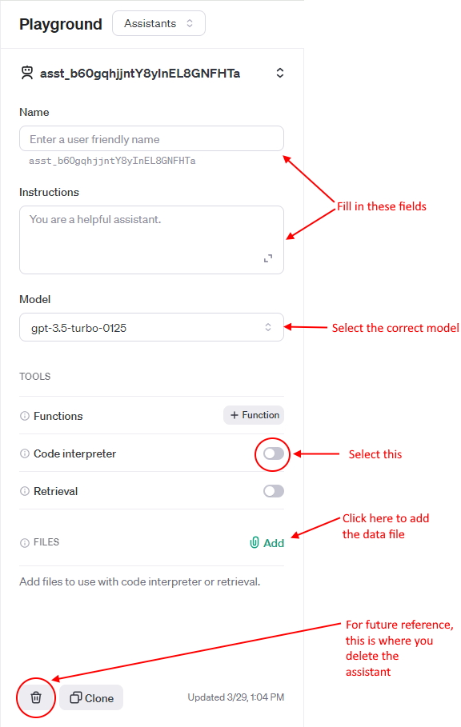

Create an AI-Generated Streamlit Application with an OpenAI Assistant
We use the OpenAI Playground and code completion tools to create a Streamlit app with interactive Plotly charts
Can we get an AI to generate a data visualization app from scratch using only the raw data and a prompt? The answer appears to be 'Yes, absolutely we can' by using OpenAI's Playground feature.
OpenAI's Playground merges the conversational ease of a chat interface with access to the powerful Assistants API. You can utilize tools like 'Code Completion' and 'Knowledge Retrieval' to interpret data files uploaded directly into the Playground.
And with this functionality, you can instruct the AI Assistant to read those files and construct code that leverages the data contained in them.
In this article, we are going to demonstrate how easy it is to get an AI Assistant to create an interactive Streamlit app that displays interactive data visualizations from CSV data.
Let's get some data
We are going to use data that is included in the Plotly package; it comes from Gapminder and it is free to use (see the Gapminder website for more details). However, to make a more realistic demonstration, we are going to save the data as an external CSV file. Just run the code below and you will create a file gapminder.csv.
import plotly.data as data
df = data.gapminder()
df.to_csv('gapminder.csv')
Here is a screenshot of the part of the data.
It is a list of country data from 1952 to 2007 that records the country name, the continent and the year of the observation. This is followed by the observational data which represents life expectancy, population and GDP per capita. The final two columns are the ISO codes for the countries.
We are going to ask the AI to create a Streamlit application that reads this data and displays interactive graphics of the population figures.
The Assistants API
The Assistants API is intended for use in writing applications that harness the power of GPT-4 along with a set of tools that allow data files to be uploaded and analysed by the LLM. To take full advantage of this new API, you need to understand the various components: Assistants, themselves, Threads and Runs.
I've written about how to use the Assistants API in Python elsewhere but for this exercise, we don't really need to get to grips with the API in any great detail as we will be using the OpenAI Playground.
If you want to get into the nitty-gritty and write Python programs that use the full power of the API, then please read the article Use OpenAI’s Powerful New Assistants API for Data Analysis.
The Playground
You will need an account with OpenAI and, as we will be using Assistants and a version of GPT-4, you will get charged for usage. Although, this should not be very much (you can do quite a lot for a few 10s of cents), you should keep an eye on your usage and it's a good idea to set a limit on how much you can spend each month. Check the menu items 'Usage' and 'Billing' as shown below.
Once you have your finances sorted out, open the Playground (from the same menu as above) and you will see that there are three modes that you can select from a dropdown menu. As you probably guessed, you need to select 'Assistants'.
Selecting this will change the user interface as shown below.
We need to create an assistant by clicking the green button in the left panel. You then need to fill in the form below.

Fill in the fields as indicated. I've called my assistant 'Data app maker' and added instructions along the lines of 'You are a data analyst and expert in writing Streamlit apps'. In addition, you need to select the 'Code interpreter' tool and select the correct model - the default is gpt-3.5.turbo-0125 but we need gpt-4-turbo-preview.
To add the data file click on the paperclip/Add icon and upload gapminder.csv.
Also, in the screenshot I've indicated where you delete the assistant when you have finished with it.
Create the app
We are now ready to go: the assistant has been created and we have uploaded the data. Now, we simply need to tell the assistant what to do.
At the bottom of the screen you will see a box where you type in a message. This is where we enter a prompt to instruct the assistant. The response will be given in the large panel above that.
This was my prompt:
Using only the data in the file 'gapminder.csv' (you can assume that this is correctly formatted csv data), create a Streamlit application that creates a line chart of population change over time for a country that is selected with a dropdown menu and a choropleth that shows the population of all countries for a year selected with a dropdown menu.
The app should have a title and introductory paragraph at the top including instructions for the user. Below this, there should be two columns: the line chart should be in the left column and the right column should contain the choropleth. The Streamlit app should be created in a file called 'app.py' and the final code should assume that the data file is called 'gapminder.csv' and resides in the same directory as the app.
On reflection, I could have made this a bit more detailed. I could have specified where the dropdown menus should be and perhaps told it which graphing package to use. I should also have told it to use widescreen mode because the two charts don't fit terrifically well side by side in narrow mode. (This latter point is easily solved by changing the settings in the running app.)
However, the Data app maker assistant did a pretty good job. Here is its response which includes the complete app (I've added bullet points and bold text to make it easier to read).
The response from the Data App Maker assistant:
To facilitate the creation of a Streamlit app that meets your requirements, I will guide you through the process of creating the app.py file content. Your Streamlit application will showcase a line chart of population change over time for a selected country, and a choropleth map displaying the population of all countries for a selected year.
Here is an outline of the Streamlit code you will need:
-
Import necessary modules: Import Streamlit, pandas for data manipulation, and Plotly for visualization.
-
Load the Data: Load the 'gapminder.csv' file using pandas.
-
Streamlit App Structure:
-
Title and introductory paragraph.
-
Sidebar dropdown for country selection and year selection.
-
Two columns layout: left for the line chart and right for the choropleth.
- Visualization: Line chart for population change over time for the selected country. Choropleth map for the population of all countries for the selected year.
Below is the app.py file content embodying the requirements:
import streamlit as st
import pandas as pd
import plotly.express as px
# Load the data
df = pd.read_csv('gapminder.csv')
# Streamlit page setup
st.title('Population Data Exploration')
st.write('''
This app allows you to explore population changes over time. Use the dropdown menus to select
a country and see its population trend, or select a year to see the world population distribution on a map.
''')
# Sidebar for selections
country = st.sidebar.selectbox('Select a Country:', df['country'].unique())
year = st.sidebar.selectbox('Select a Year:', sorted(df['year'].unique()))
# Splitting into two columns
col1, col2 = st.columns(2)
# Population change over time for the selected country
with col1:
st.header(f'Population Trend: {country}')
country_df = df[df['country'] == country]
fig1 = px.line(country_df, x='year', y='pop', title=f'Population Change for {country}')
st.plotly_chart(fig1)
# Choropleth for population of all countries in a selected year
with col2:
st.header(f'Global Population in {year}')
year_df = df[df['year'] == year]
fig2 = px.choropleth(year_df, locations='iso_alpha',
color='pop',
hover_name='country',
color_continuous_scale=px.colors.sequential.Plasma,
title=f'World Population in {year}')
st.plotly_chart(fig2)
Instructions for running the Streamlit app:
Copy the code above into a new file named app.py located in the same directory as your 'gapminder.csv' data file.
Ensure you have Streamlit, pandas, and Plotly installed in your Python environment. If not, you can install them using pip:
pip install streamlit pandas plotly
Run the Streamlit app by opening a command-line interface, navigating to the directory containing app.py, and running the command:
streamlit run app.py
This will start the Streamlit server, and you should see instructions in the command-line interface on how to access the app through your web browser.
The result
Given that I could have been more specific with my prompt, the result is good and can be seen above. I would prefer that the dropdown menus be in the main window and that, as I mentioned earlier, it should use wide mode by default. Adding these requirements to the prompt would not be a problem and I'll know better what to expect next time.
This is not a very complex app and I could have easily written it myself but the AI assistant can type much faster than I can! It took only a few seconds to create the app much quicker than doing it manually.
The power of this approach, however, is that you do not need to be a competent programmer to create a pleasing data visualization from raw data. You just need enough technical knowledge to know what is possible and, of course, you need to understand your data.
I'm sure that there are many areas where OpenAI's assistants could be used to analyse data: for example, finding correlations in the data. But that is for another article.
Thanks for reading and I hope you have found the article useful. You can stay up-to-date with my articles on data visualization and related topics by subscribing to my occasional, free newsletter here.
Streamlitfrom Scratch
Streamlit is a framework for creating Data Science apps in Python.
Streamlit from Scratch is an ebook that will teach you how to get started with
Streamlit.

How Charts Work: Understand and explain data with confidence
From the Back Cover
How Charts Work brings the secrets of effective data visualisation in a way that will help you bring data alive. Charts, graphs and tables are essential devices in business, but all too often they present information poorly. This book will help you:

The Art of Statistics: How to Learn from Data
Discover how data literacy is changing the world and gives you a better understanding of life's biggest problems. I have used this book in various articles and found it to be invaluable.Plotting with Pandas
Plotting with Pandas: an Introduction to Data Visualization is an ebook that covers basic and statistical plots using Python and Pandas, line and bar charts, scatter plots, pie charts, histograms, box plots, etc.

Storytelling with Data: A Data Visualization Guide for Business
Don't simply show your data - tell a story with it! Storytelling with Data teaches you the fundamentals of data visualization and how to communicate effectively with data. I use this book in the series of articles '12 Essential Visualizations and How to Implement them.